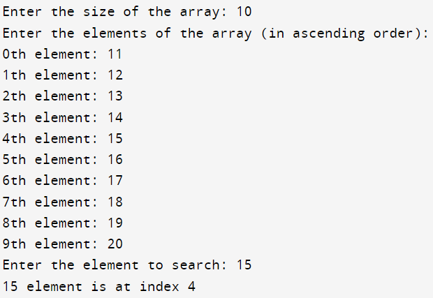

#include <stdio.h>
int binarySearch(int arr[], int size, int key) {
int start = 0;
int end = size - 1;
while (start <= end) {
int mid = (start + end) / 2;
if (arr[mid] == key) {
return mid;
} else if (arr[mid] < key) {
start = mid + 1;
} else {
end = mid - 1;
}
}
return -1;
}
int main() {
int arr[30];
int size, key, i, temp;
printf("Enter the size of the array: ");
scanf("%d", &size);
printf("Enter the elements of the array (in ascending order):\n");
for (i = 0; i < size; i++) {
printf("%dth element: ", i);
scanf("%d", &arr[i]);
}
printf("Enter the element to search: ");
scanf("%d", &key);
temp = binarySearch(arr, size, key);
if (temp == -1) {
printf("%d Element not found\n", key);
} else {
printf("%d element is at index %d\n", key, temp);
}
return 0;
}
Output:
